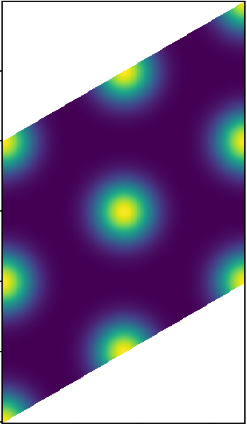
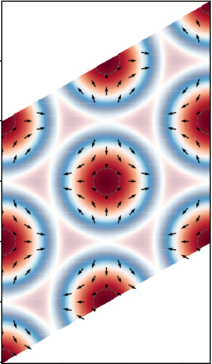
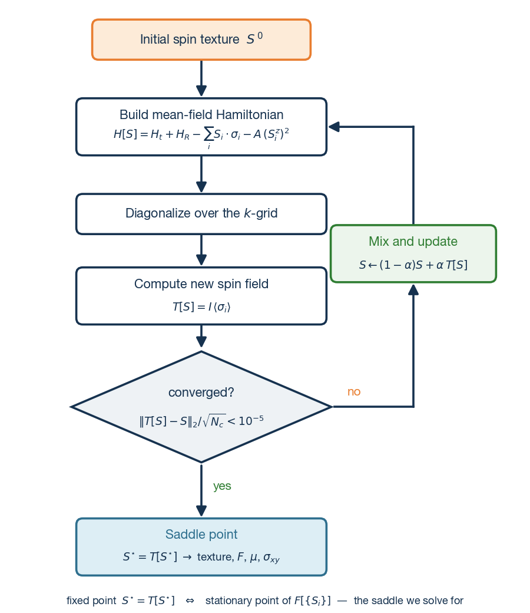
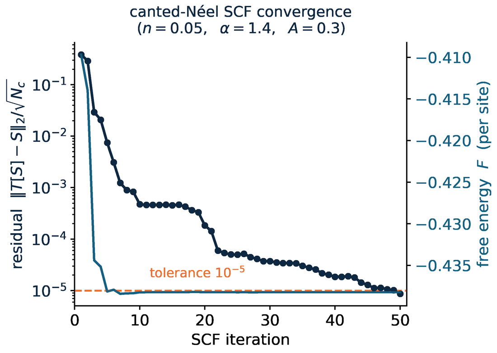

Self-Consistent Hartree–Fock Solver for 2D Electron Crystals
When interactions dominate, an electron liquid can spontaneously crystallize
into magnetic textures that carry their own topology. I built the machinery that decides
which phase wins: a from-scratch Hartree–Fock solver, spanning lattice and continuum
systems, where dozens of candidate orders compete under one validated pipeline that ends
in a band-topology verdict.


A self-consistent solution of the solver, shown three ways: charge-density
crystal (left), spin direction (middle), and spin amplitude (right). The interacting electron
liquid spontaneously orders into a triangular crystal with a nontrivial spin texture.

The core loop: a symmetry-breaking trial order is iterated through
build-Hamiltonian → diagonalize → re-evaluate → mix until it reaches a fixed point, a
stationary point of the free energy.

A live run at the anchor cell: the self-consistency residual
(dark) falls five orders of magnitude while the free energy (teal) settles; Pulay-accelerated
mixing rides through the plateaus that trap plain iteration.
This is the mean-field engine behind my correlated-electron research. It solves the
Hartree–Fock / self-consistent-field equations from scratch in two settings:
a triangular-lattice Hubbard model with Rashba spin–orbit coupling and easy-axis anisotropy,
and a continuum two-dimensional electron gas with Rashba coupling and long-range Coulomb
interaction. Both target the same question: when does an interacting electron liquid
spontaneously crystallize into a topological magnetic texture?
The design is a tiered diagnostic pipeline. First, linear response: the bare
susceptibility χ₀(q) locates where the liquid wants to order. Next, a
Stoner / Landau instability analysis ranks the candidate orders. The
survivors go to the full self-consistent field, seeded from a library of ~35 competing
magnetic textures, iterated with linear and Pulay (DIIS) mixing under residual-adaptive
schedules, so the winner is chosen by energy competition rather than by the seed.
Finally, every converged state gets a topology verdict: its real-space
winding number, its Chern number computed by two independent methods
(a link-variable lattice formula and a twist-averaged Kubo formula) that must agree, and its
Hall conductivity σxy.
The emphasis throughout is numerical rigor: χ₀ is checked against the
analytic 2D Lindhard function, the Chern machinery is benchmarked on an exactly solvable
model before it touches research data, cross-grid stability is required for every topology
claim, and no energy ordering is trusted before basis- and k-grid convergence. Campaigns run
at scale (hundreds of self-consistent solutions per parameter scan) on NERSC's Perlmutter
(SLURM, resume-safe checkpointing) and Azure cloud nodes.